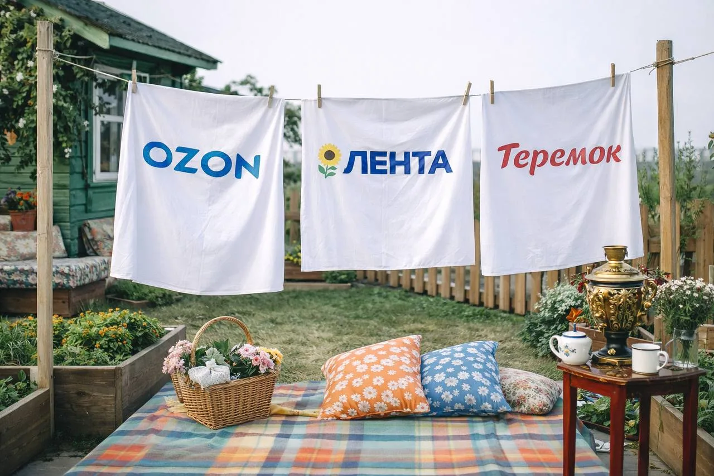
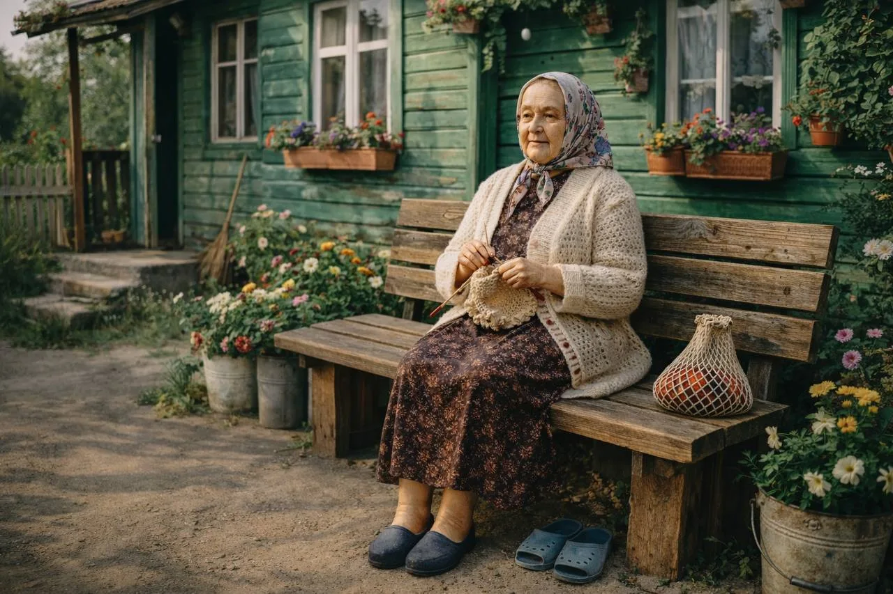
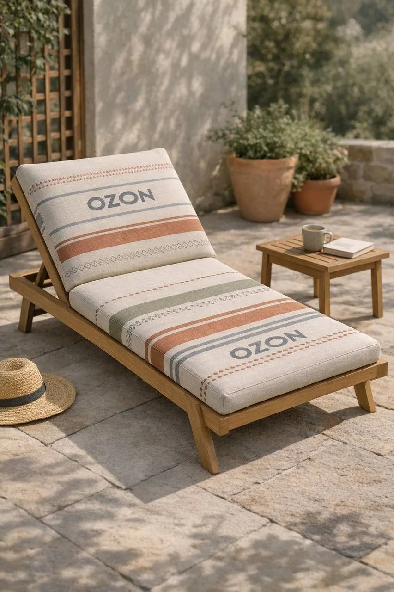
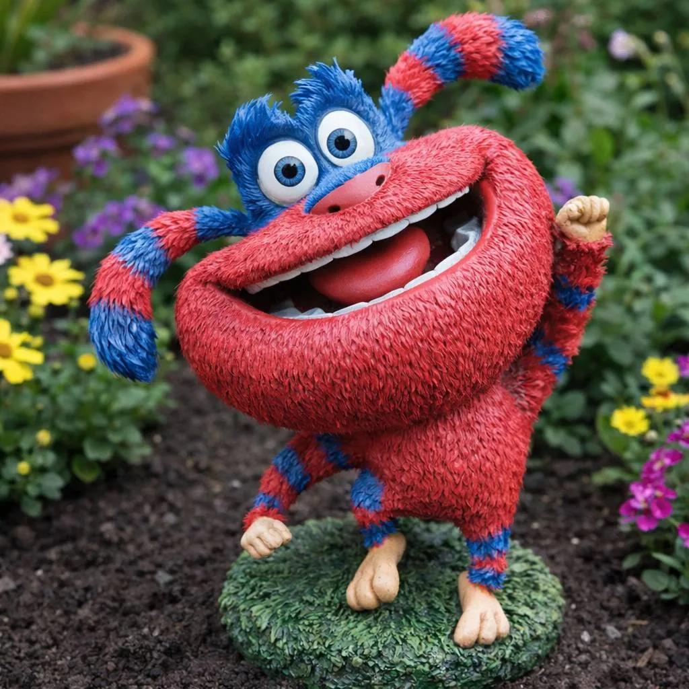

Спецпроект · ADG Group
Крыша «Дача»
Задача
Превратить крышу торгового центра в место притяжения на всё лето: разработать концепцию пространства, дизайн-код, функциональные зоны, событийную программу и идеи партнёрских интеграций.
Концепция
«У бабушки на даче» — место, куда мечтает сбежать каждый городской житель летом. Пространство переносит гостей в атмосферу беззаботных каникул, где каждая деталь вызывает тёплые воспоминания.
Что было разработано
- Дизайн-код: цветники, грядки, бар-погреб, бельевые верёвки с брендированными простынями, винтажная мебель и тёплые фразы из детства
- Функциональные зоны: городской солярий, лаунж-лекторий со сценой, бар, детская кухня, агро-зона, маркет и спортивная площадка
- Культурное наполнение: библиотека, настольные игры, фотозона, велостимулятор, бадминтон, городки и другие дачные развлечения
- Событийная программа «Три дачных сезона»: «сажаем», «окучиваем» и «копаем» картошку — с йогой, спид-дейтингом, кинопоказами, мастер-классами, лекциями и концертами